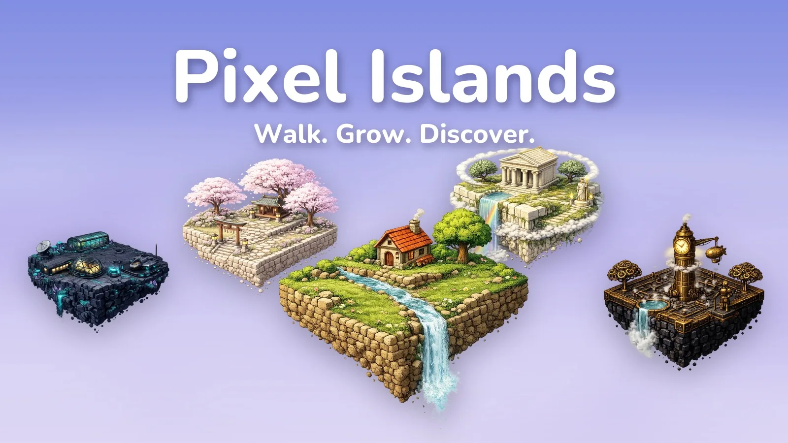
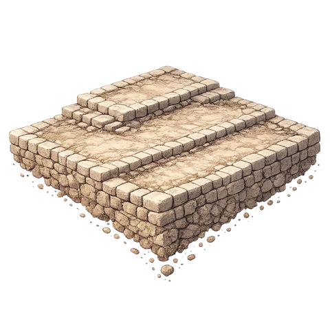
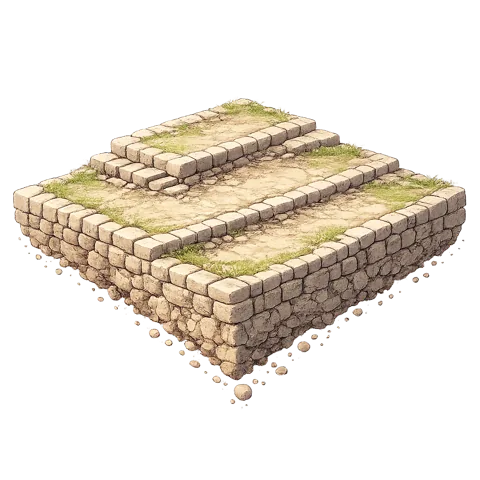
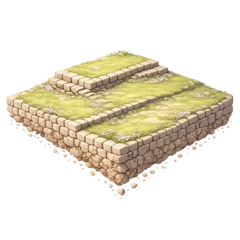
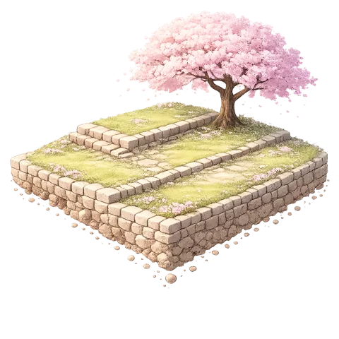
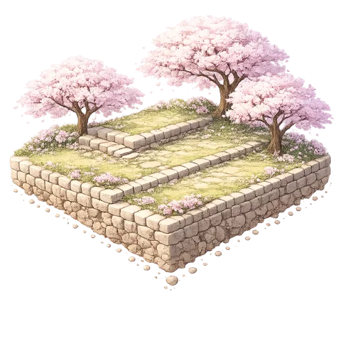
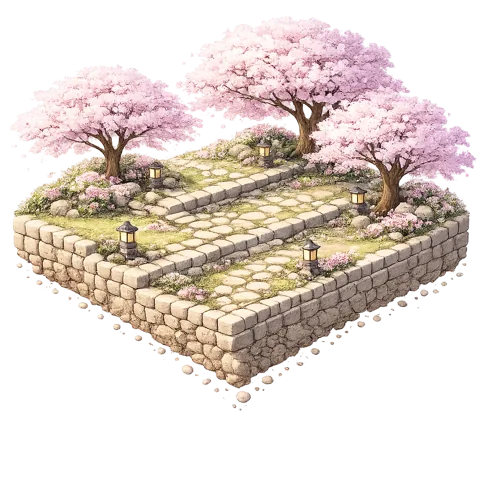
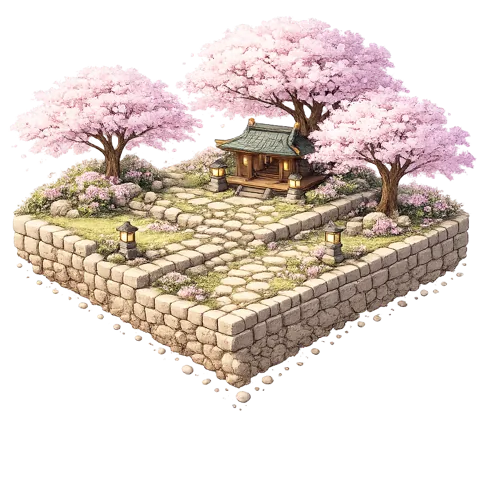
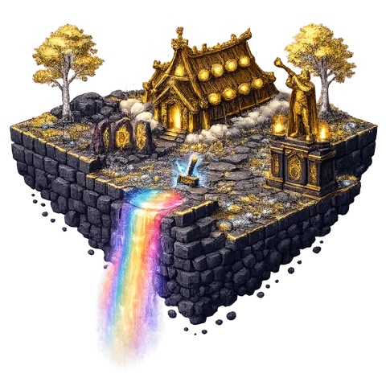
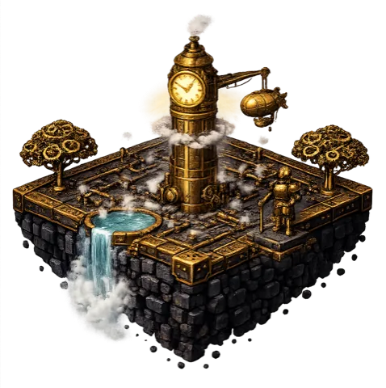

Your steps grow
a tiny pixel island
Pixel Islands is a cozy step tracker game for iPhone. Walk in the real world and watch your island evolve through 8 stages — no pressure, no coaching, just growth.

Walking, made rewarding
No coaching, no guilt, no complicated stats. Just a simple loop that makes you want to take the long way home.
1. Walk your day
Pixel Islands reads your steps from Apple Health — phone in pocket, Apple Watch on wrist, it all counts. No GPS, no battery drain.
2. Watch it grow
Every step feeds your island. Bare rock becomes grass, streams, houses, whole little worlds — across 8 evolving stages.
3. Collect them all
Finish an island and pick your next theme. Build a floating collection of tiny worlds powered entirely by your walking.
From bare rock to living world
This is the Sakura island growing through its 8 stages — powered by real steps.







Small app, lots to love
8 evolving stages
Every island grows from bare rock to a living diorama, one walk at a time.
Collectible themes
Sakura shrines, Norse Asgard, steampunk skyports, neon cyberpunk and more.
Home screen widget
Your island lives on your home screen — progress at a glance, all day.
Apple Health powered
Reads only your step count from HealthKit. No GPS, no tracking, battery friendly.
iCloud sync
Your islands are safely backed up. New phone? Your collection comes with you.
Private by design
Your health data is never sold, never used for ads, never shared.
Which island will you grow next?
Every completed island unlocks the choice of a new world.
 Sakura
Sakura
Asgard
SteampunkQuestions, answered
How does Pixel Islands count my steps?
Pixel Islands reads your step count from Apple Health (HealthKit). It doesn't use GPS or run in the background, so it's battery friendly. Any steps recorded in Apple Health — including steps from your Apple Watch — count toward your island's growth.
Is Pixel Islands free?
Yes — free to download and play. An optional Premium unlocks additional island themes and light progress acceleration.
Is my health data private?
Pixel Islands only reads your step count — nothing else — and uses it solely to grow your island. Your health data is never sold, never used for advertising, and never shared with data brokers. Read the full privacy policy.
What happens when I complete an island?
When your island reaches its final stage, it joins your collection and you choose a new themed island to grow next — from cherry-blossom shrines to steampunk skyports.
Does Pixel Islands work with Apple Watch?
Steps tracked by your Apple Watch are saved to Apple Health, and Pixel Islands reads them from there — so your Watch walks and workouts all count.
What iPhone do I need?
Pixel Islands runs on iPhone with iOS 17 or later and is available in 20 languages.
Walking, researched
Guides from the Pixel Islands team on making steps count.